Práctica 4: Convolución y Correlación de señales en tiempo continuo
Contents
Introducción
Para poder dar inicio a la practica debemos recordar que existen varios metodos númericos en los que nos podemos apoyar para el calculo de las convoluciones en tiempo discreto que estaremos viendo en la siguietne practica.
- Integreción
Una de las versiones del teorema fuendamenteal del calculo, donde f es integrable y la región bajo la curva está bien definida. Existen diferentes técnicas de integración como lo son: s Cambio de variable, integración por partes, sustitución trigonométrica, fracciones parciales, entre otras s, ya que toda funcion continua es integrable.

Al no aplicarse el TFC, se puede aproximar la función a un polinomio, teniendo en cuenta que existe un error.
- Fórmulas cerradas de Newton-Cotes (n=1)
Se utilizan polinoios de interpretación de Lagrange que aporximan una integral a un polinomio de grado n que coincide con la funcion en determinados puentos más un termino de error, integrando el polinomio en lugar de la funcion. Las también llamadas formula cerrada de (n+1) puntos, siendo n el número del grado del polinomio dónde el primer punto 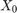 es el punto a y el último punto 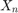 es el punto b. Los puntos intermedios estan separados una distancia h entre sí (paso), donde:


La primera formula de interpolación de Newtonn-Cotes se llama Regla del trapecio, debido a que la primera parte de la aproximación nos define el área de un trapecio, esta encuetra un polinomio de grado 1. Para esto se necesitan dos puntos de interpolación.

La segunda parte del polinomio se utiliza para calcular el error, por lo tanto, para un polinomio de grado 1, el error va a ser cero, debido a que la segunda derivada de dicho polinomio es cero.
- Regla de Simpson o regla de Newton-Cotes de tres puntos
Se utiliza para extrapolar tres puntos para encontrar un polinomio de segundo grado.

Regla de Simpson o regla de Newton-Cotes de 4 puntos

- Regla compuesta del trapecio
El concepto de la regla compuesta del trapecio es similar al de las sumas de Riemann, sin embargo, la diferencia entre la suma de Riemann y la regla del trapecio es que utiliza trapecios en lugar de rectángulos, eso quiere decir que entre mas trapecios se utilicen la aproximacion a la señal será más exacta.
Para esto se utiliza la siguiente formula:

- Regla compuesta de Simpson
En el caso de la regla compuesta de Simpson utiliza funciones de 3er grado ($x^3), por lo que deividimos la señal en varios intervalos, es necesario utilizar 3 intervalos para cada claculo, tambien hay que tomar en cuenta que hay puntos que son el inicio y final de dos diferentes señales, para poder obtener los valores de estas aproximaciones se utiliza la siguiente formula:

- Cuadratura Gaussiana
En la cuadratura Gaussiana selecciona los puntos de evaluacion de manera optima y no en una forma igulamente especializada, construida para dar el resultado de un polinomio de grado 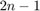 o menos, eleginles para los puntos 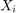 y los coeficinetes 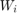 para 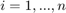 . El dominio de tal cuadratura por regla del 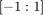

Punto 1
Para el PR04 reporte la grafica de la simulación númerica de la convolución y compare con el resultado análitico que obtuvo para el problema 1.
% siendo los valores para de _x_ y _h_ los siguientes:
x=@(t) exp(-t).*(t>=0 & t<1);
h = @(t) t.*(t>=-1 & t<1);
unt(x, h)
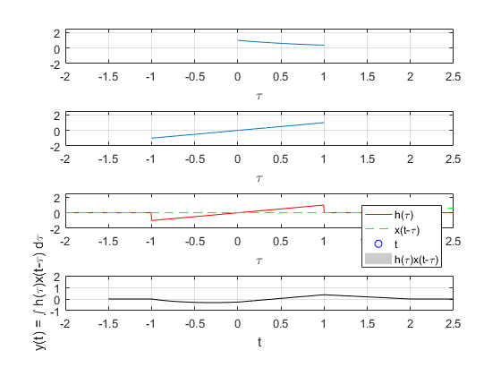 Punto 2
Para el PR05 reporte la grafica de la simulación númerica de la correalción y compare con el resultado análitico que obtuvo para el problema e).
x=@(t) ((t>=0&t<3.0) - (t>=3&t<4)); h=@(t) ((t>=0&t<3.0) - (t>=3&t<4)); unt (x,h)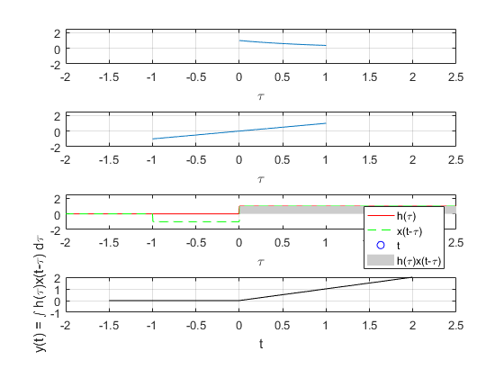
Punto 3
Realice la simuación de la convolución de las señales (c) con (d) del problema 3.1.1

n=-5:5;
a = [0 0 -9 -6 -3 0 3 6 9 0 0];
b = [0 0 0 4 2 0 2 4 0 0 0];
convdisc([n;a],[n;b])
%
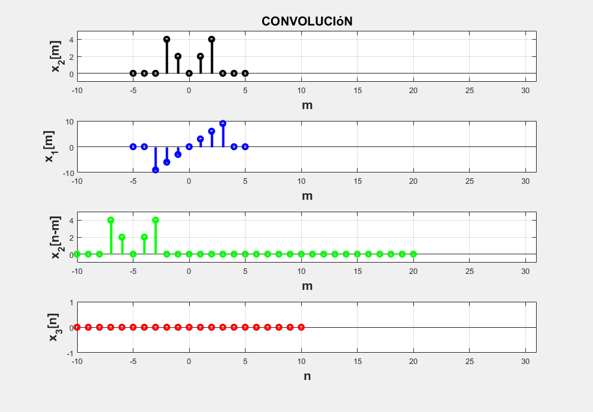 Punto 4
Realice la simuación de la correlación de las señales (c) con (d) del problema 3.1.1
n=-5:5; a = [0 0 -9 -6 -3 0 3 6 9 0 0]; b = [0 0 0 4 2 0 2 4 0 0 0]; % Observación: Para hacer la correlación es necesario invertir la segunda señal, pero dado que al invertir % esta quedaria igual, entonces, se deja la señal como esta. convdisc([n;a],[n;b])
Punto 5
Realice la la convolución de las señales (c) con (d) del problema 3.1.1 utilizando el comando conv de MATLAB, muestre el código utilizado y gráfique el resultado, sugerencia: Utilice las propiedades de traslación de la convolución.
clc clear all close all n=-6:6; f_n=[0 0 0 -9 -6 -3 0 3 6 9 0 0 0]; g_n=[0 0 0 0 4 2 0 2 4 0 0 0 0]; fg_n=conv(f_n,g_n,'same'); subplot(3,2,1); stem(n,f_n,'filled','linewidth',2); title('f(n)'); grid on subplot(3,2,2); stem(n,g_n,'filled','linewidth',2); title('g(n)'); grid on subplot(3,2,[3 6]); long_fg_n=length(f_n)+length(g_n)-1; stem(n,fg_n,'k','filled','linewidth',2); title('Convolución'); grid on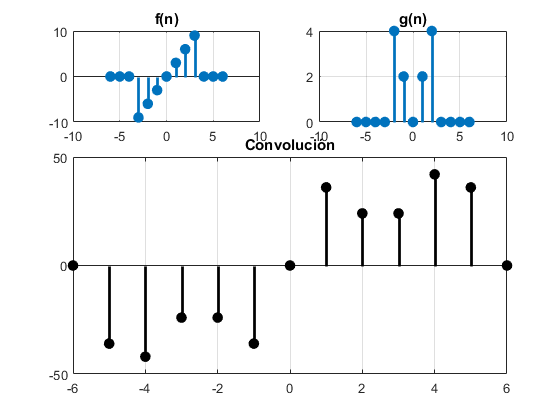